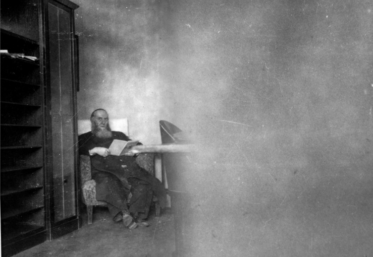

כבר ביום הראשון לבואו לארץ ישראל, השתתף הרב יצחק מישולובין בהתוועדות מרגשת בכפר
כבר ביום הראשון לבואו לארץ ישראל, השתתף הרב יצחק מישולובין בהתוועדות מרגשת בכפר חב”ד עם הרבה ‘לחיים’. הרב זוין שפגש בו, התרשם מהבחור החב”די בעל המראה החסידי שאפילו יודע ללמוד כדבעי >> כ”ח אדר תשכ”ט >> הרב יצחק מישולובין
כבר ביום הראשון לבואו לארץ ישראל, השתתף הרב יצחק מישולובין בהתוועדות מרגשת בכפר חב”ד עם הרבה ‘לחיים’. הרב זוין שפגש בו, התרשם מהבחור החב”די בעל המראה החסידי שאפילו יודע ללמוד כדבעי >> כ”ח אדר תשכ”ט >> הרב יצחק מישולובין

בשנת תשכ”ט, כאשר השערים נפתחו קמעה, רבים מחסידי חב”ד בסמרקנד הגישו בקשה להיתר יציאה. כדי לקבל את ההיתר המיוחל, היו זקוקים למכתב בקשה לאיחוד משפחות, מקרובים מדרגא ראשונה שהתגוררו בחו”ל.
למזלנו, חמיו וחמותו של אחי ר’ מיכאל - הרב אהרן חזן, כבר היו בארץ ישראל, והם שיגרו בקשה לאחי ר’ מיכאל. גם אחי אליהו יצא בזכות העובדה שאחות חמותו כבר גרה בארץ ישראל, והם הגישו בקשה כמה פעמים עד שסוף סוף הורשו לצאת בתחילת שבט תשכ”ט.
בשלב מסוים אבא שלי “מצא” “אח” שלו שנעלם במלחמת העולם השניה, והוא שיגר ניירות בקשה עבורנו מארץ ישראל.
כששני אחיי יצאו מרוסיה, נסענו ללוות אותם. כמה ימים לאחר מכן קיבלנו הודעה שאנחנו צריכים להגיע למשרדי ‘אוביר’, אך קודם לכן, עלי להגיע ללשכת הגיוס כדי לקבל פטור. גם זה לא היה פשוט, שכן זה היה כרוך בבדיקות. למעשה, כבר קודם לכן, בתקופת הגיוס הרשמית, עברתי בדיקות רפואיות אותן עברתי בשלום בזכות שוחד שהענקתי. שוב שיחדתי את הרופא שאמור לשבת בוועדה הרפואית, אך כאשר הגעתי למקום, ראיתי שיש שני רופאים, ו’למזלי’ נשלחתי לרופא השני, אותו כלל לא שיחדתי…
כשנכנסתי לרופא, אמרתי לו שיש לי בעיות בלב, אבל בבדיקות שלו הוא לא ראה שום דבר חריג. למרבה הנס, כאשר הוא שלח אותי לחדר האחות לבדיקת לחץ דם ועוד בדיקה כלשהי, ראיתי שיושבת שם אשה בוכרית, שכנה שלנו, שהכרתי אותה. ביקשתי ממנה שתעזור לי, והיא אכן רשמה נתונים כאלה שגרמו לרופא לחתום על פטור מיידי… משם הלכתי למשרדי אוביר, וקיבלתי היתר יציאה. זה היה ימים ספורים לפני פורים.
שמחה גדולה בכפר חב”ד
בשלהי אדר יצאתי מרוסיה עם הוריי. לקחתי עמי כתבי חסידות במטרה להביאם לרבי. אלו כתבים שהשגתי בכמה מקומות ברוסיה. חלק מהכתבים היו מאמרים והנחות מאדמו”ר הזקן ומאדמו”ר האמצעי.
בטרם נסעתי לשדה התעופה, נסעתי לשלמה היצהרי, חסיד חב”ד במוסקבה שהיה לו מפעל אוכל גדול. לקחתי ממנו ארגז אחד של משקה בשם סטוליצ’נה, זהו משקה מסוג משובח שיוצא לחו”ל ולא היה מצוי במוסקבה.
כשהגעתי לעמדת הבידוק בשדה התעופה, הנחתי את כל החבילות שלי על הדלפק, והם שאלו על כל פרט ופרט. תוך כדי כך, הם ראו את המשקה. כששאלו אותי מה זה, אמרתי “זה סטוליצ’נה בשבילכם”… כך כתבי החסידות עברו בשלום…
רגע גדול של אימה חוויתי ברגעים האחרונים לפני שעליתי למטוס. זה היה בשלב של הביקורת האחרונה לפני העלייה למטוס. ההורים שלי כבר עברו את הביקורת, ואז הפקידה פתאום הסתכלה עלי ואמרה: “אל תמשיך, תחכה”… היא הלכה לפקיד כלשהו, לא ידעתי לאן הלכה, כאשר הלב שלי יצא… חלפו דקות ארוכות, כחמש עשרה דקות שנדמו בעיניי כנצח. היא חזרה ונתנה לי אישור להמשיך הלאה…
אותו יום היה כ”ח באדר תשכ”ט, והוא זכור לי עד עצם היום הזה.
על המטוס שטס ממוסקבה לווינה היו עוד שני חסידי חב”ד - ר’ יוסק’ה גרינברג ומשפחתו, אותם הכרנו מסמרקנד. כמובן שלא ידעתי מראש שהוא יהיה על המטוס שלנו. גם ר’ דוד לייב חן ושני בניו נסענו עמנו.
כמובן שלא החלפנו דבר בינינו, מחמת הפחד. עד שהמטוס נחת בווינה לא היינו בטוחים שעברנו בשלום.
בווינה קיבלו אותנו אנשי הסוכנות, ומשם נסענו למקום בו שהו כל העולים. בדרך כלל היו מתעכבים בווינה במשך שבוע–שבועיים, אך פתאום הגיעה הודעה שאנחנו נוסעים כבר באותו היום! אפילו לא ישנו שם לילה.
כשהגעתי לארץ ישראל, הרגשתי הרגשה נעימה מאוד שהנה סוף סוף הגעתי ב”ה לארץ ישראל ולחופש.
למרות זאת, חוויתי הרגשה לא נעימה, כאשר אנשי הסוכנות הגיעו לקבל את פני האורחים מרוסיה, ולכבודנו עשו בשדה התעופה ריקוד נשים שלא בצניעות… נדהמתי. ‘זה ארץ ישראל?’ זה עשה עלי רושם עגום. הרגשתי מאוד לא טוב.
בכפר חב”ד פגשתי בחבר וותיק שיצא כשנתיים קודם לכן, ר’ שמואל חיים פרנקל. אמרתי לו שאני רוצה לנסוע לרבי, אך אולי עוד אתעכב בכפר חב”ד ורק אחר כך אסע לרבי, אך הוא זירז אותי ואמר לי “אל תתעכב, סע ישר לרבי”.
באותו ערב התקיימה התוועדות עם המשפיע ר’ שלמה חיים קסלמן בכפר חב”ד. הוא קירב אותי והושיב אותי לידו. באותן שנים, בחור חב”די שיצא מרוסיה, זה היה אטרקציה שגרמה להתרגשות רבה. אחר כך רקדנו, ור’ אברהם מייזליש הלך עמי לבית הכנסת הישן, שם לקחנו קצת משקה.. היה שמח מאוד…
•
כאשר אמרתי שאני רוצה לנסוע לרבי, נכנסו לתמונה העסקנים ר’ שלוימקה מיידנצ’יק, ר’ אפרים וולף ויבלחט”א ר’ זושא פוזנר שסייעו לי לקבל היתר יציאה מהצבא. זה לא היה פשוט, שכן עוד לא היה לי דרכון, והייתה לי רק תעודת עולה.
לזירוז העניינים היו צריכים את מעורבותו של הרב שלמה יוסף זווין. נסעתי אפוא לביתו של הרב זוין, שהתפעל מאוד מכך שהגיע מרוסיה בחור ישיבה שיודע ללמוד ומדבר עברית טובה. בכלל, גם בשדה התעופה התפעלו מהעברית השגורה בפי, וכששאלו אותי מאיפה אני יודע עברית, השבתי - מהתורה…
לאחר שסודרה כל הניירת, דרכון וויזה והיתר יציאה, יצאתי לרבי.
כשהרבי קרא בשמי בליל הסדר
ביום י”ב בניסן תשכ”ט הגעתי לקראון הייטס.
הכל היה חדש בשבילי. עולם אחר לגמרי. לא שיערתי מה זה בכלל. אבל אחר כך כשהתאקלמתי, הרגשתי שזה לגמרי אחרת. למרות שברוסיה חווינו מסירות נפש, בבחינת ‘כתית’, הרגשה שלא הייתה כדוגמתה בארצות הרווחה - מכל מקום, אני הרגשתי להיפך: שהעבודה והתורה שהיה ברוסיה, אינה בערך למה שאני חווה ומרגיש פה.
בליל הסדר של אותה שנה, היו בחורים רבים שנכנסו לסלון בדירת אדמו”ר הריי”צ, שם הרבי ערך את הסדר עם זקני החסידים. בין הבחורים היו גם הבחורים ששבו משליחות מאוסטרליה. מחמת הדוחק, עמדתי ליד החלון. פתאום הרש”ג הזכיר שיש כאן בחור שיצא זה עתה מרוסיה והגיע לכאן לפסח, והרבי הגיב ואמר “מישולבין”. בו במקום סחבו אותי ושמו אותי ממש על יד הרבי. במהלך החלק השני של ההגדה, עמדתי על יד הרבי ושמעתי איך הרבי אומר את ההגדה.
ביחידות שנכנסתי לאחר הפסח, מסרתי לרבי את כתבי החסידות שהבאתי עמי, והרבי בירכני: בזכות פדיון שבויים של הכתבים/ביכלאך (לא זוכר הלשון), יהיה הפדיון שבויים של אנ”ש כולם ברוסיה.